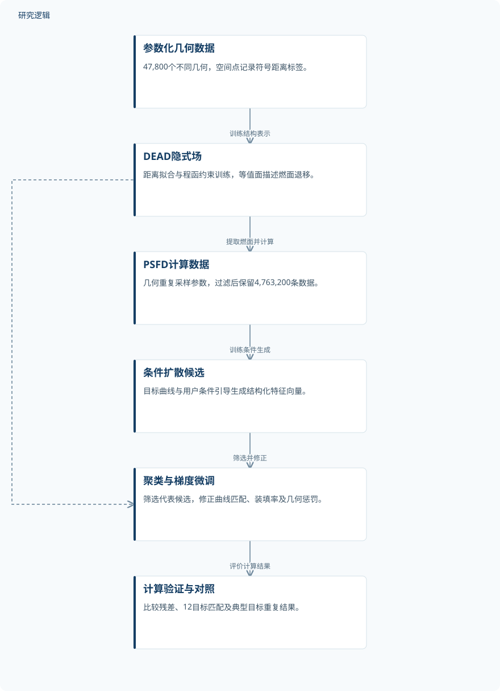
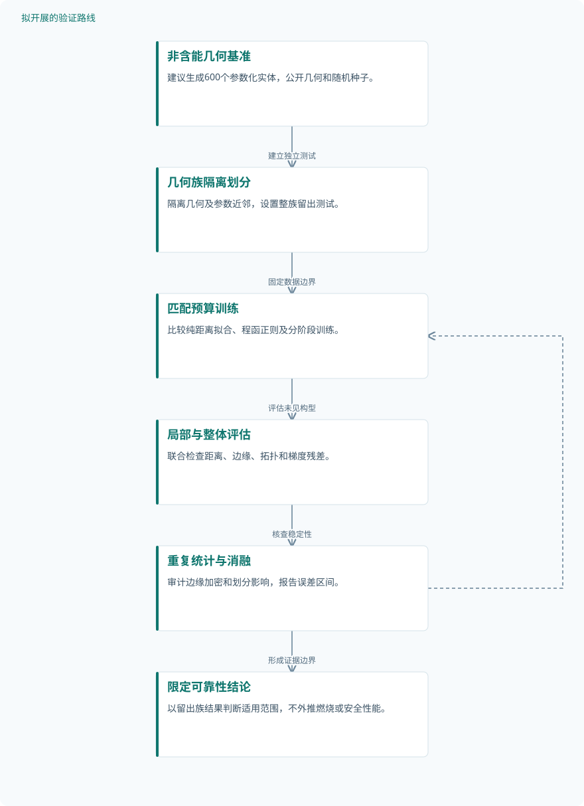

论文精读
生成式人工智能赋能三维含能材料结构逆设计与可定制燃烧
Generative AI empowered inverse design of 3D energetic material structures for customizable combustion
精读更新 2026-10-03 17:24 · 依据论文全文整理
给定一条目标性能曲线，能否反推出三维结构，而不必先指定它属于哪种构型？这篇论文将燃烧表面演化压缩为可微的隐式场，再用条件扩散生成候选，通过优化修正性能与几何约束。其阅读价值不仅在于展示生成式逆设计的完整链路，更在于揭示一条重要边界：计算曲线的高匹配度，距离真实燃烧与结构可靠性的证据闭环仍有多远。
文章目录
逆设计的对象不是静态形状，而是演化中的表面
含能材料点燃后，能量释放速率通常难以精确控制；内部燃烧表面的变化则提供了结构调控入口。论文面向固体火箭推进剂药柱，将目标压力—时间曲线反向映射为三维几何，问题同时包含空间结构和时间演化。
传统尺寸优化需要预先选择结构类型，搜索范围受到参数化方式限制。作者采用生成与优化结合的路线：前者提供多个结构候选，后者修正曲线匹配和工程约束，避免把训练数据中的近似匹配直接当作最终设计。
用程函隐式场连接几何、扩散与梯度微调
DEAD沿用DeepSDF式神经场，以坐标、潜向量和几何向量输出连续退移厚度场W，其等值面描述不同退移阶段的燃面。式(1)要求‖∇ₓW‖²=1，训练先拟合符号距离标签，再加入程函残差；这提供物理正则，但不意味着残差处处为零。
条件DDPM生成结构化向量，而非体素图像；性能曲线经一维卷积嵌入，去噪网络使用全连接层。采样后通过k-means选出代表候选，再固定DEAD权重微调设计变量；目标包含性能匹配、装填率、程函残差及可选几何惩罚。
压力曲线来自准静态零维内弹道计算，式(17)以决定系数r²衡量计算曲线与目标曲线的偏差。DEAD训练分为50,000和20,000轮，DDPM采用2,000个扩散步；这些是训练配置，不能计作独立样本或验证次数。
原研究：从合成几何到计算曲线匹配


展示论文已完成的计算链路；实物制造和燃烧验证不属于该链路中的已完成成果。
下载 SVG图示关系说明
实线表示相邻阶段的信息流，虚线表示跨阶段联系或反馈。
参数化几何数据 → DEAD隐式场：训练结构表示；DEAD隐式场 → PSFD计算数据：提取燃面并计算；PSFD计算数据 → 条件扩散候选：训练条件生成；条件扩散候选 → 聚类与梯度微调：筛选并修正；DEAD隐式场 → 聚类与梯度微调：可微解码；聚类与梯度微调 → 计算验证与对照：评价计算结果
合成数据规模可观，独立性仍需划分证据
作者随机参数化构建47,800个不同几何，每个几何采样300,000个空间点。再对每个几何采样100组参数，经过压力过滤形成4,763,200条PSFD数据；这些条目共享原始几何，不能视为同等数量的独立结构或实物试件。
结构表示验证比较DEAD与不含程函约束的DeepSDF，覆盖两组插值和局部表面细节。逆设计验证包括引导权重、聚类数量及生成数量比较，12条目标各运行一次，并对典型双阶段目标开展随机种子重复和MENN重复对照。
论文报告测试集损失，但未报告训练、验证、测试的数量与划分层级，也未报告新增实物制造或燃烧试验。程函项有直接对照，微调则以前后结果比较为主；各惩罚项的独立消融及权重敏感性仍缺失。
| 验证任务 | 样本与规模 | 主要结果 |
|---|---|---|
| DEAD物理残差与几何细节对照 | 训练数据含47,800个几何；两组插值共用部分基准结构，局部细节展示一个结构。随机测试点数量及重复训练次数未报告。 | DEAD插值平滑，展示案例中减少表面波动并保持尖角；DeepSDF角点残差最高为DEAD的5.0×10³倍，非所有点的统一倍数。 |
| 条件生成敏感性与随机种子重复 | 代表设置生成1,000个向量、选5个簇代表；另开展10次随机种子重复，五种模式出现次数为10、9、2、9、10。 | 1,000向量、5簇的代表平均r²为0.9299；排除仅出现2次的P3后，重复参数RSE为0.1%–2.7%。 |
| 12目标逆设计及MENN重复对照 | 12个目标各运行一次；典型目标两种方法各独立运行10次，MENN汇集1,185个Pareto点，非实物试件。 | 微调后12目标r²为0.9457–0.9977；典型目标有4个非支配解，同η=0.826时最佳比较为0.9943与0.9924。 |
| 性能微调与局部几何约束检验 | 五种模式报告500次优化迭代；局部约束展示一个起始设计和三个结果，独立重复与新增仿真总量未报告。 | 代表P2的r²从0.9083升至0.9935，η从51.1%升至79.7%；局部约束三个结果η为88.9%、87.8%、85.5%。 |
展开数据来源、分组、对照与验证边界
DEAD物理残差与几何细节对照
数据来源。使用符号距离数据及燃烧室随机测试点，比较两组双线性插值，并展示finocyl结构的W场细节。
分组与工况。finocyl—wagon wheel和finocyl—annular slot插值；另比较加入程函项前后的训练损失与表面细节。
数据划分。插值基准取自训练集，训练过程中报告测试集损失；各集合数量、比例及几何层面的隔离方式未报告。
对照与消融。DeepSDF不含程函项；DEAD在已训练模型上继续加入该项，其他训练条件是否完全匹配未报告。
评价指标。符号距离MSE、程函残差MSE及等值面观察；训练残差与微调残差的表达式不同，不应混为同一指标。
验证边界。以选取案例和可视化为主，未报告全数据集误差分布、重复训练区间或独立外部构型验证。
条件生成敏感性与随机种子重复
数据来源。典型双阶段目标的生成特征向量，比较引导权重、聚类数、生成数量及不同随机种子下的模式。
分组与工况。引导权重0.0–1.0，聚类数5、10、20、50；固定5簇时，生成数量比较覆盖100–5,000个向量。
数据划分。训练、验证、测试划分未报告；生成向量、筛选后的簇代表和原始训练几何属于不同统计层级。
对照与消融。无条件生成及不同参数设置相互比较；未提供其他生成模型的同条件对照或完整模块消融。
评价指标。r²、特征最小欧氏距离、生成和评估耗时，以及参数均值标准误；RSE=SEM/mean×100%。
验证边界。高匹配度属于筛选后的代表解，不能推广至全部生成样本；P3的装填率和长度RSE分别为12%和11%。
12目标逆设计及MENN重复对照
数据来源。12条目标曲线包括工程相关轮廓；性能由计算模型评估，真实发动机案例提供目标或尺寸参照。
分组与工况。比较未微调、微调、数据集前三名及两种装填率门槛下的二维优化；重复比较仅覆盖典型目标。
数据划分。训练测试划分未报告；数据集检索要求用户定义变量偏差小于±10%，不等同于外部测试隔离。
对照与消融。数据集最佳匹配与MENN二维全局优化；MENN使用岛模型并行NSGA-II，与本文三维设计空间不同。
评价指标。式(17)定义的r²、装填率η及Pareto非支配性；重复图中的阴影为分箱后±1标准差，并非置信区间。
验证边界。案例c、h微调后r²略降，f的MENN匹配更高；重复仅覆盖一个目标，硬件与维度差异限制效率比较。
性能微调与局部几何约束检验
数据来源。五种代表模式的优化前后曲线，以及一个起始结构在三个槽宽约束组下的微调结果。
分组与工况。五模式分别比较微调前后；局部约束三组改变槽宽要求，孔道半径和槽端肉厚要求保持一致。
数据划分。未报告独立测试划分；数据集近邻按特征欧氏距离选择，每组展示五个近邻，不是五次独立实验。
对照与消融。微调前结构及数据集近邻；未报告分别移除程函、装填率或各局部几何惩罚的独立消融。
评价指标。r²、η及加权惩罚项；装填率惩罚为(1−η)²，几何要求通过边界上的场值构建惩罚。
验证边界。未报告约束尺寸最终测量值、重复性及实物验证；数据集未见结构不能据此认定普遍新颖性或制造可靠性。
高匹配度成立于计算模型，优势不能一概而论
图8中五种模式微调后的r²为0.9796–0.9935，装填率均提高，但P5并未严格超过0.98。表2也显示案例c、h的匹配度略降，案例f的MENN结果更高；因此不能概括为所有目标均改善、均优于对照。
典型目标的两种方法各运行10次，本文有4个解不被1,185个MENN Pareto点支配，但Pareto点不是独立运行次数。A5000上的生成、聚类与微调约在15分钟内完成，对照使用24核CPU求解二维问题，不能据此计算同任务、同硬件的纯算法加速比。
本站判断，最扎实的进展是将连续几何表示、条件生成和约束修正接成可微链路，而非完成工程验证。模型忽略侵蚀燃烧、喉部烧蚀及热—力耦合，几何惩罚也不能替代结构完整性分析；图12类别分项合计43与总称42不一致，W的归一化表述与图5的m色标亦需澄清。
从这篇论文走向下一项研究
以下为结合研究方向提出的候选方案，实验设计与预期目标有待验证。
以非含能几何基准检验隐式场的跨构型可靠性
问题与短板。现有插值主要依赖训练构型，几何级划分和边缘误差统计不足。建议先在非含能空腔实体上研究表示可靠性，不涉及推进剂配方、燃烧性能优化或点火实验。
改进机制。将整族几何留出测试，并对交汇边缘单独采样，联合检查距离误差、梯度残差和拓扑变化。训练点与测试点分离之外，还必须隔离同一几何及其参数近邻。
候选创新。候选贡献是把跨构型留出、局部误差定位与生成覆盖审计组合起来。已检索GINNs摘要提出显式多样性约束，可作为设计启发，但尚不能据摘要认定它适用于本文任务。
数据与实验设计。建议设计为自行生成600个非含能参数化实体，按几何族划分训练、验证、测试，并另设整族留出集。原论文数据需合理请求获取；若不可得，使用可公开发布的自建几何与固定种子。
对照与消融。比较相同网络和预算下的纯距离拟合、加入程函项及分阶段训练，消融边缘加密与族级划分。统一空间点数量和运行设备，报告重复训练，而非仅选择最佳一次。
成功判据。预注册距离误差、边缘偏差、拓扑失效率和残差分位数，以留出族上的重复统计判定改善。只有多个指标共同改善且未牺牲拓扑有效性，才支持跨构型可靠性的结论。
风险与替代方案。程函残差变小可能仍伴随错误零等值面，边缘处也可能存在不可微性。若正则损害几何保真，改用局部适用掩膜或显式距离求解参照，不将低残差直接解释为真实物理正确。
对既有计算曲线开展模型误差与比较公平性审计
问题与短板。论文优势主要建立在简化模型的曲线匹配上，重复验证覆盖面有限。建议研究既有结果的证据稳健性，不新增含能结构优化，也不把高r²作为工程可靠性的替代指标。
改进机制。固定已有候选和目标曲线，分离随机生成波动、数值离散误差及模型假设误差。以分层重采样和误差区间检查算法排序是否稳定，避免把候选筛选效应误认为普遍优势。
候选创新。候选贡献是形成可审计的逆设计比较协议，而非提出新燃烧模型。已检索Gaussianization Layers预印本摘要指出前向模型失准可能使潜变量偏离先验，这只能提供误差分析动机。
数据与实验设计。建议设计为对12个已有目标各整理20次算法重复记录，并保存全部候选与筛选过程；这些记录需要向作者请求或重新计算。仅使用已有数字模型，不假定可获得实测曲线或实验设备。
对照与消融。将数据集检索、未微调与微调结果置于相同目标和预算下比较，单列二维与三维任务。消融候选筛选规则和曲线离散密度，同时分别核算训练、预处理与推理成本。
成功判据。成功判据是各目标的匹配误差、失败率、覆盖率及耗时区间可复算，且排序对合理离散变化保持稳定。若优势仅存在于少数目标或最佳解，应明确限定结论而非追求统一胜出。
风险与替代方案。原始数据或基线实现可能无法取得，重算也可能改变原论文条件。替代路径是仅审计公开汇总数值并标注不可识别项；没有实测参照时，只讨论计算证据，不推断实物安全性。
后续建议：非含能几何上的跨构型可靠性审计


对应第一条研究路线，节点均为拟议设计，不代表原论文已经完成或已经取得改善。
下载 SVG图示关系说明
实线表示相邻阶段的信息流，虚线表示跨阶段联系或反馈。
非含能几何基准 → 几何族隔离划分：建立独立测试；几何族隔离划分 → 匹配预算训练：固定数据边界；匹配预算训练 → 局部与整体评估：评估未见构型；局部与整体评估 → 重复统计与消融：核查稳定性；重复统计与消融 → 限定可靠性结论：形成证据边界；重复统计与消融 → 匹配预算训练：必要时修正规则